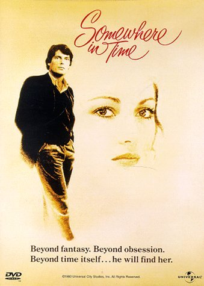

POSTS
[방구석 영화제] 사랑의 은하수. Somewhere in Time. - "모든 사진에는 사연이 있다네. Every Picture Has a Story"
오래된 사진 속의 한 여인에게 빠진 사내가
시간을 건너뛰어 그 여인을 만나고 사랑하게 된다는 영화.

이 영화의 감독 Jeannot Szwarc 선생은
로맨틱 코메디 미드 Ally McBeal 의 시리즈 중 몇 편을 연출하기도 했다.
“모든 사진에는 사연이 있다네. Every Picture Has a Story.”